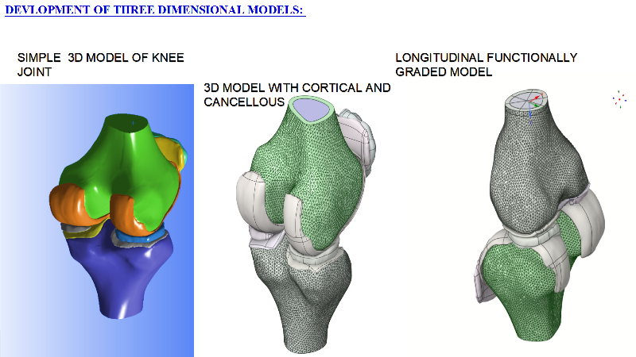
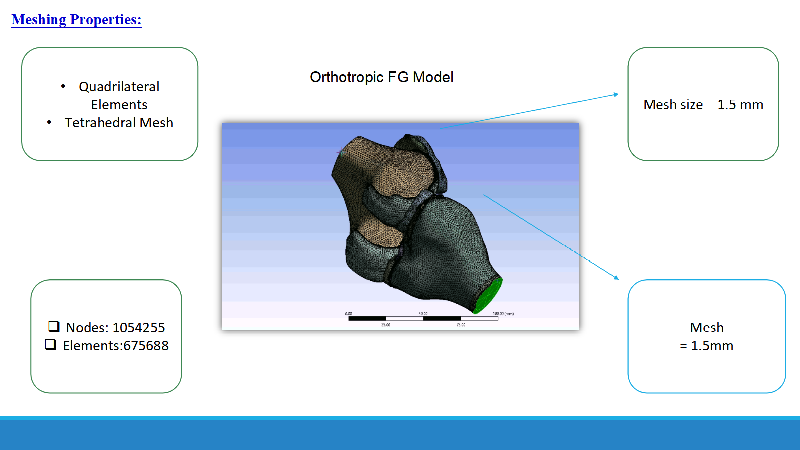
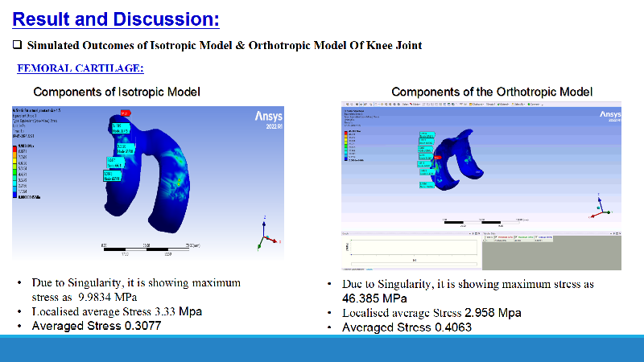
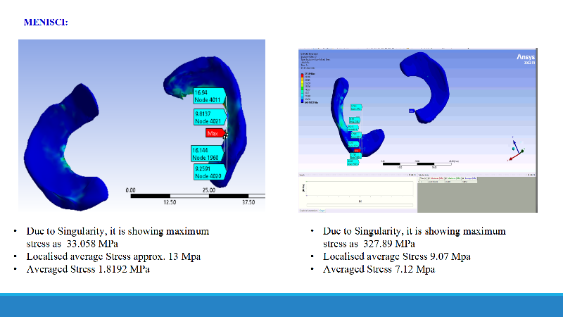
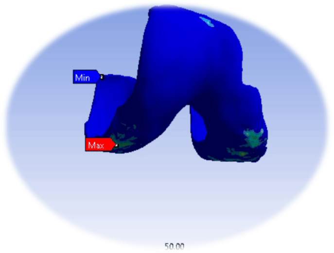
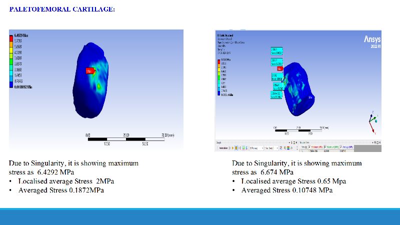
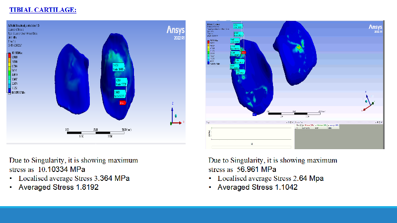

Finite element study of a human knee joint under load — from 3D anatomical modeling through functionally graded meshing to a component-wise isotropic vs orthotropic stress comparison in ANSYS. The goal: understand real stress distribution across cartilage and menisci to inform durable, tissue-mimicking implant design, with a 3D-printed FGM validation route.
Built the knee joint in three progressive fidelities — a simple solid model, a model separating cortical and cancellous bone, and a longitudinal functionally graded (FG) model that varies material properties through the structure to mimic real tissue behavior.

Discretized the orthotropic FG model with quadrilateral and tetrahedral elements at a 1.5 mm mesh size, yielding just over a million nodes — a dense mesh chosen to resolve stress gradients across thin cartilage layers.

Ran the loaded model under both isotropic and orthotropic material assumptions and compared von Mises stress across each component. The orthotropic FG model captures direction-dependent tissue behavior the isotropic model can't — changing where and how stress concentrates.





Localised average stress by component — the orthotropic FG model consistently redistributes and lowers localised stress relative to the isotropic assumption, a key input for material and geometry decisions in implant design.
| Component | Isotropic — localised avg | Orthotropic — localised avg |
|---|---|---|
| Femoral cartilage | 3.33 MPa | 2.958 MPa |
| Tibial cartilage | 3.364 MPa | 2.64 MPa |
| Patellofemoral cartilage | 2.0 MPa | 0.65 MPa |
| Menisci | ~13 MPa | 9.07 MPa |
Note: peak (max) values reflect mesh singularities at contact edges; localised average stress is the meaningful design figure.
To move the study beyond simulation, I developed an experimental validation protocol using 3D-printed cartilage models with Functionally Graded Materials — physically reproducing the graded stiffness the FG model assumes, so simulated stress behavior can be checked against a real, testable specimen. This closes the loop from analysis to a buildable, validated design.